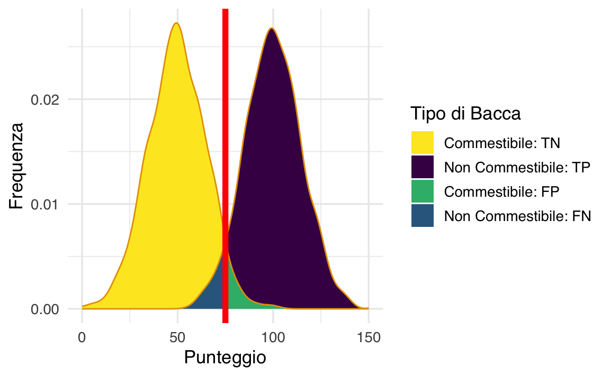

here::here("code", "_common.R") |>
source()
# Load packages
if (!requireNamespace("pacman")) install.packages("pacman")
pacman::p_load(
petersenlab, magrittr, viridis, pROC, ROCR, rms, ResourceSelection,
gridExtra, grid, ggpubr, msir, car, ggrepel, MOTE,
tinytex
)83 Predizione
In questo capitolo imparerai a
- conoscere le problematiche di base della predizione statistica;
- calcolare e interpretare la curva ROC e la statistica AUC.
Prerequisiti
- Leggere il capitolo 9 Prediction del testo di Petersen (2024).
Preparazione del Notebook
83.1 Introduzione
Le predizioni rappresentano un aspetto cruciale in numerosi ambiti. Possono riguardare sia dati categoriali, valutabili attraverso strumenti come matrici di confusione e modelli di regressione logistica, sia dati continui, analizzabili tramite regressioni multiple o modelli più complessi come quelli misti o a equazioni strutturali.
Il capitolo si concentra sulla valutazione delle predizioni in contesti categoriali, approfondendo l’utilizzo della curva ROC e dell’AUC (Area Under the Curve) per misurare la qualità dei modelli predittivi.
83.2 Probabilità di una condizione medica
Un esempio classico, discusso da Petersen (2024), illustra il problema di calcolare la probabilità di avere l’HIV (\(P(HIV \mid Test+)\)) partendo da un risultato positivo a un test diagnostico. Le informazioni di base sono:
- Tasso di base dell’HIV (\(P(HIV)\)): 0.3% (0.003), ovvero la probabilità che una persona nella popolazione generale abbia l’HIV.
- Sensibilità del test (\(P(Test+ \mid HIV)\)): 95% (0.95), ovvero la probabilità che il test sia positivo quando la persona ha l’HIV.
- Specificità del test (\(P(Test- \mid \neg HIV)\)): 99.28% (0.9928), ovvero la probabilità che il test sia negativo quando la persona non ha l’HIV.
Utilizziamo il teorema di Bayes per calcolare \(P(HIV \mid Test+)\):
\[ P(HIV \mid Test+) = \frac{P(Test+ \mid HIV) \cdot P(HIV)}{P(Test+)}, \]
dove il denominatore \(P(Test+)\) rappresenta la probabilità complessiva di un test positivo, somma di:
- Veri positivi: \(P(Test+ \mid HIV) \cdot P(HIV)\),
- Falsi positivi: \(P(Test+ \mid \neg HIV) \cdot P(\neg HIV)\).
Con \(P(Test+ \mid \neg HIV) = 1 - P(Test- \mid \neg HIV) = 1 - 0.9928 = 0.0072\), e \(P(\neg HIV) = 1 - P(HIV) = 0.997\), possiamo calcolare:
\[ P(Test+) = (0.95 \cdot 0.003) + (0.0072 \cdot 0.997) \approx 0.010027. \]
Inserendo i valori nella formula di Bayes:
\[ P(HIV \mid Test+) = \frac{0.95 \cdot 0.003}{0.010027} \approx 0.2844 \quad (28.44\%). \]
Un primo test positivo aumenta quindi la probabilità di avere l’HIV al 28.44%.
Dopo un primo test positivo, la probabilità di avere l’HIV è aumentata al 28.44%. Consideriamo ora l’effetto di un secondo test positivo e calcoliamo la probabilità aggiornata di avere l’HIV.
La probabilità di ottenere un secondo test positivo (\(P(\text{Secondo Test+})\)) si calcola considerando due scenari:
-
La persona ha l’HIV:
- Probabilità: \(P(HIV \mid Test+) = 0.2844\),
- Sensibilità del test: \(P(Test+ \mid HIV) = 0.95\).
-
La persona non ha l’HIV:
- Probabilità: \(P(\neg HIV \mid Test+) = 1 - P(HIV \mid Test+) = 0.7156\),
- Tasso di falsi positivi: \(P(Test+ \mid \neg HIV) = 0.0072\).
La probabilità totale è data da:
\[ P(\text{Secondo Test+}) = P(Test+ \mid HIV) \cdot P(HIV \mid Test+) + P(Test+ \mid \neg HIV) \cdot P(\neg HIV \mid Test+). \]
Sostituendo i valori:
\[ P(\text{Secondo Test+}) = (0.95 \cdot 0.2844) + (0.0072 \cdot 0.7156) \approx 0.2753. \]
Aggiorniamo la probabilità di avere l’HIV dopo un secondo test positivo usando nuovamente il teorema di Bayes:
\[ P(HIV \mid \text{Secondo Test+}) = \frac{P(Test+ \mid HIV) \cdot P(HIV \mid Test+)}{P(\text{Secondo Test+})}. \]
Sostituendo i valori:
\[ P(HIV \mid \text{Secondo Test+}) = \frac{0.95 \cdot 0.2844}{0.2753} \approx 0.981 \quad (98.1\%). \]
L’esempio presentato da Petersen (2024) è rilevante per il problema generale della predizione, in quanto illustra come il ragionamento bayesiano consenta di integrare informazioni iniziali e successive per migliorare la precisione delle stime. In particolare, i risultati evidenziano tre aspetti fondamentali:
Tasso di base come punto di partenza cruciale: La probabilità iniziale (prior) di avere l’HIV, pari allo 0.3%, sottolinea quanto sia importante considerare il contesto epidemiologico e demografico nella fase iniziale della predizione. Questo valore guida l’intero processo di aggiornamento e mostra che una condizione rara richiede prove forti per modificarne la probabilità.
Aggiornamento incrementale delle probabilità: Il passaggio da una probabilità del 28.44% dopo un primo test positivo a una probabilità del 98.1% dopo un secondo test positivo evidenzia la potenza del teorema di Bayes nel combinare evidenze successive. Ogni risultato positivo aggiunge informazioni che riducono l’incertezza iniziale, migliorando progressivamente la qualità della predizione.
Valore aggiunto dei test ripetuti: L’analisi dimostra che l’efficacia diagnostica cresce con l’accumularsi di evidenze. Test ripetuti consentono di discriminare meglio tra casi veri positivi e falsi positivi, fornendo stime più affidabili e utili per decisioni cliniche.
Questi risultati mettono in luce l’importanza del ragionamento bayesiano non solo per valutare la probabilità di una condizione medica, ma anche per affrontare una vasta gamma di problemi di predizione in cui l’incertezza iniziale può essere ridotta integrando dati nuovi. L’approccio evidenzia come sia possibile arrivare a conclusioni robuste anche in contesti caratterizzati da bassi tassi di base e test diagnostici non perfetti.
83.3 Accuratezza delle Predizioni
Dopo l’introduzione sull’uso del teorema di Bayes per la predizione, Petersen (2024) affronta il tema delle predizioni con una tabella 2 × 2. Per spiegare questo caso, Petersen (2024) presenta un esempio adattato da Meehl & Rosen (1955).
Immaginiamo che l’esercito americano utilizzi un test per escludere i candidati con basse probabilità di completare l’addestramento di base. Per analizzare l’accuratezza delle predizioni effettuate, possiamo utilizzare una matrice di confusione, che confronta le predizioni del test con i risultati reali.
| Decisione (Predizione) | Adattamento Effettivo (Scarso) | Adattamento Effettivo (Buono) | Totale Predetto | Rapporto di Selezione (SR) |
|---|---|---|---|---|
| Escludere | TP = 86 (0.043) | FP = 422 (0.211) | 508 | SR = 0.254 |
| Trattenere | FN = 14 (0.007) | TN = 1.478 (0.739) | 1,492 | 1 − SR = 0.746 |
| Totale Effettivo | 100 | 1,900 | N = 2,000 | |
| Tasso di Base (BR) | BR = 0.05 | 1 − BR = 0.95 |
83.3.1 La Matrice di Confusione
La matrice di confusione è uno strumento che mette in relazione le predizioni di un modello con i risultati osservati. Nel caso di una predizione binaria (es. sì/no o positivo/negativo), la matrice è organizzata in quattro categorie:
- Vero Positivo (TP): La predizione corretta che identifica una persona con la caratteristica (es. cattivo adattamento).
- Vero Negativo (TN): La predizione corretta che identifica una persona senza la caratteristica.
- Falso Positivo (FP): L’errore in cui si predice la presenza della caratteristica quando in realtà non è presente.
- Falso Negativo (FN): L’errore in cui si predice l’assenza della caratteristica quando in realtà è presente.
Questi quattro risultati consentono di valutare l’accuratezza di un modello.
83.3.2 Tassi Marginali e Indicatori Chiave
Dalla matrice di confusione possiamo calcolare alcuni tassi e indicatori utili:
Tasso di Base (BR): La probabilità che una persona abbia la caratteristica di interesse. Ad esempio: \[ BR = \frac{FN + TP}{N} = \frac{100}{2000} = 0.05 \] Ciò significa che solo il 5% dei candidati ha un cattivo adattamento.
Rapporto di Selezione (SR): La probabilità di essere esclusi dal programma: \[ SR = \frac{TP + FP}{N} = \frac{508}{2000} = 0.254 \] In questo caso, il 25,4% dei candidati è stato escluso.
Percentuale di Accuratezza: Rappresenta la proporzione di predizioni corrette sul totale: \[ \text{Accuratezza} = 100 \times \frac{TP + TN}{N} = 100 \times \frac{86 + 1478}{2000} = 78\% \]
Accuratezza per Caso: Misura la precisione che si otterrebbe effettuando predizioni casuali basate solo sulle probabilità marginali (BR e SR). Per esempio: \[ P(TP) = BR \times SR = 0.05 \times 0.254 = 0.0127 \] \[ P(TN) = (1 − BR) \times (1 − SR) = 0.95 \times 0.746 = 0.7087 \] \[ \text{Accuratezza per Caso} = P(TP) + P(TN) = 0.0127 + 0.7087 = 0.7214 \, (72,14\%) \]
Confrontando il 78% di accuratezza del modello con il 72.14% ottenibile per caso, il modello fornisce un miglioramento del 6%.
83.3.3 L’Importanza del Tasso di Base
Quando il tasso di base è molto basso (come in questo caso, BR = 0.05), l’accuratezza complessiva può essere ingannevole. Se predicessimo che nessuno ha un cattivo adattamento, otterremmo un’accuratezza del 95%, ma il modello non identificherebbe alcun caso di cattivo adattamento.
| Decisione (Predizione) | Adattamento Effettivo (Scarso) | Adattamento Effettivo (Buono) | Totale Predetto |
|---|---|---|---|
| Escludere | TP = 0 | FP = 0 | 0 |
| Trattenere | FN = 100 | TN = 1,900 | 2,000 |
| Totale Effettivo | 100 | 1,900 | N = 2,000 |
In questo caso, l’accuratezza complessiva sarebbe: \[ P(\text{Accuratezza}) = \frac{TP + TN}{N} = \frac{0 + 1900}{2000} = 95\%. \]
Questo esempio evidenzia che un’elevata accuratezza complessiva non garantisce un buon modello, specialmente quando il tasso di base è sbilanciato.
In conclusione, l’analisi di una matrice di confusione richiede attenzione ai tassi di base e agli errori, poiché l’accuratezza globale può essere fuorviante. È essenziale confrontare il valore del modello con ciò che si otterrebbe per caso o con strategie alternative, come basarsi solo sul tasso di base. Inoltre, occorre considerare il peso relativo degli errori (falsi positivi e falsi negativi) in base al contesto applicativo. Questi aspetti saranno discussi nel prossimo paragrafo.
83.3.4 Diversi Tipi di Errori e i loro Costi
In un processo di classificazione, non tutti gli errori hanno lo stesso costo. Esistono due tipi principali di errori: i falsi positivi e i falsi negativi, ciascuno con implicazioni diverse che dipendono dal contesto della predizione.
Spesso, l’accuratezza complessiva può essere aumentata affidandosi semplicemente al tasso di base, ma in molte situazioni può essere preferibile utilizzare uno strumento di screening, anche a costo di una minore accuratezza complessiva, se ciò consente di minimizzare errori specifici che hanno costi elevati. Ad esempio:
Screening medico: Consideriamo uno strumento di screening per l’HIV. I falsi positivi (classificare erroneamente una persona come a rischio) comportano costi come la necessità di test di conferma e, talvolta, ansia temporanea per l’individuo. Tuttavia, un falso negativo (non identificare una persona effettivamente a rischio) ha costi molto più alti, poiché potrebbe portare a un mancato intervento precoce, con conseguenze gravi per la salute. In questo caso, i costi associati ai falsi negativi superano di gran lunga quelli dei falsi positivi, rendendo lo screening preferibile nonostante una diminuzione dell’accuratezza complessiva.
Selezione del personale in situazioni di rischio: La CIA, ad esempio, ha utilizzato strumenti di selezione per identificare potenziali spie durante periodi di guerra. Un falso positivo in questo contesto (considerare erroneamente una persona come una spia) potrebbe risultare nell’esclusione di un candidato innocente. Un falso negativo (assumere una persona che è effettivamente una spia) comporta rischi molto più gravi, rendendo cruciale l’identificazione corretta delle spie, anche a costo di più falsi positivi.
Il modo in cui i costi degli errori vengono valutati dipende fortemente dal contesto. Alcuni potenziali costi dei falsi positivi includono trattamenti medici non necessari o il rischio di incarcerare una persona innocente. Al contrario, i falsi negativi possono portare al rilascio di una persona pericolosa, alla mancata individuazione di una malattia grave, o al mancato riconoscimento di un rischio imminente.
83.3.5 Importanza del Rapporto di Selezione e del Tasso di Base
Il costo degli errori può variare a seconda di come si imposta il rapporto di selezione (cioè, quanto rigorosamente si applica il criterio per accettare o escludere un individuo). La scelta di un rapporto di selezione meno restrittivo o più restrittivo influisce sulla probabilità di incorrere in falsi positivi e falsi negativi e può dipendere dal contesto e dai costi associati agli errori.
- Criterio meno rigido: Se escludere candidati è costoso, ad esempio quando si ha la necessità di assumere molte persone, potrebbe essere più utile un criterio di selezione permissivo, che accetta anche persone con un rischio potenziale.
- Criterio più rigido: In contesti in cui non è necessario accettare molti individui, si può adottare un criterio di selezione più rigido per ridurre i rischi, scartando un numero maggiore di candidati sospetti.
Quando il rapporto di selezione differisce dal tasso di base degli esiti negativi effettivi, inevitabilmente si generano errori:
- Se, ad esempio, il rapporto di selezione prevede di escludere il 25% dei candidati, ma solo il 5% risulta effettivamente “non idoneo,” il risultato sarà un numero elevato di falsi positivi.
- D’altro canto, se si esclude solo l’1% dei candidati mentre il tasso di non idoneità è del 5%, si finirà per includere molti falsi negativi.
83.3.6 Predizioni e Affidabilità in Condizioni di Basso Tasso di Base
Fare predizioni accurate diventa particolarmente complesso quando il tasso di base è basso, come nel caso di eventi rari (ad esempio, il suicidio). In questi casi, il numero di casi positivi reali è molto ridotto, rendendo difficile identificare correttamente i pochi eventi positivi senza generare numerosi falsi positivi o falsi negativi.
Questa difficoltà può essere compresa in relazione alla teoria classica dei test, che definisce l’affidabilità come il rapporto tra la varianza del punteggio vero e la varianza del punteggio osservato. Con un tasso di base molto basso, la varianza del punteggio vero è ridotta, il che abbassa l’affidabilità della misura e rende più complessa una predizione accurata.
83.3.7 Sensibilità, Specificità, PPV e NPV
Come abbiamo visto, la percentuale di accuratezza da sola non è sufficiente per valutare l’efficacia di un modello, poiché è molto influenzata dai tassi di base. Ad esempio, se il tasso di base è basso, potremmo ottenere un’alta percentuale di accuratezza semplicemente affermando che nessuno ha la condizione; se è alto, affermando che tutti ce l’hanno. Perciò, è essenziale considerare altre metriche di accuratezza, come sensibilità (SN), specificità (SP), valore predittivo positivo (PPV) e valore predittivo negativo (NPV).
Queste metriche, che si possono calcolare dalla matrice di confusione, ci aiutano a valutare se il modello è efficace nel rilevare la condizione senza includere erroneamente i casi negativi. Analizziamole in dettaglio:
-
Sensibilità (SN): indica la capacità del test di identificare correttamente i veri positivi, cioè le persone con la condizione. Si calcola come la proporzione di veri positivi (\(\text{TP}\)) rispetto al totale di persone con la condizione (\(\text{TP} + \text{FN}\)):
\[ \frac{\text{TP}}{\text{TP} + \text{FN}} = \frac{86}{86 + 14} = 0.86 \]
-
Specificità (SP): misura la capacità del test di identificare correttamente i veri negativi, ossia le persone senza la condizione. Si calcola come la proporzione di veri negativi (\(\text{TN}\)) rispetto al totale di persone senza la condizione (\(\text{TN} + \text{FP}\)):
\[ \frac{\text{TN}}{\text{TN} + \text{FP}} = \frac{1,478}{1,478 + 422} = 0.78 \]
-
Valore Predittivo Positivo (PPV): indica la probabilità che una persona classificata come positiva abbia effettivamente la condizione. Si calcola come la proporzione di veri positivi (\(\text{TP}\)) sul totale dei positivi stimati (\(\text{TP} + \text{FP}\)):
\[ \frac{\text{TP}}{\text{TP} + \text{FP}} = \frac{86}{86 + 422} = 0.17 \]
-
Valore Predittivo Negativo (NPV): rappresenta la probabilità che una persona classificata come negativa non abbia effettivamente la condizione. Si calcola come la proporzione di veri negativi (\(\text{TN}\)) sul totale dei negativi stimati (\(\text{TN} + \text{FN}\)):
\[ \frac{\text{TN}}{\text{TN} + \text{FN}} = \frac{1,478}{1,478 + 14} = 0.99 \]
Ogni misura è espressa come una proporzione, variando da 0 a 1, dove valori più alti indicano una maggiore accuratezza per ciascun aspetto specifico. Usando queste metriche otteniamo un quadro dettagliato dell’efficacia dello strumento a un determinato cutoff.
In questo caso, il nostro strumento mostra:
- Alta sensibilità (0.86): è efficace nel rilevare chi ha la condizione.
- Bassa specificità (0.78): classifica erroneamente come positivi molti casi che non hanno la condizione.
- Basso PPV (0.17): la maggior parte dei casi classificati come positivi sono in realtà negativi, indicando una frequenza elevata di falsi positivi.
- Alto NPV (0.99): quasi tutti i casi classificati come negativi non hanno la condizione.
Quindi, pur avendo una buona capacità di rilevare i positivi (alta sensibilità), il modello è meno efficace nel limitare i falsi positivi (basso PPV). Questo potrebbe essere accettabile se l’obiettivo è identificare tutti i potenziali casi positivi, anche a costo di includere molti falsi positivi, ma potrebbe non essere ideale se il costo degli errori di falsa positività è elevato.
83.4 Stime di Accuratezza e Cutoff
Sensibilità, specificità, PPV e NPV variano in base al cutoff (ovvero, la soglia) per la classificazione. Consideriamo il seguente esempio. Degli alieni visitano la Terra e sviluppano un test per determinare se una bacca è commestibile o non commestibile.
sampleSize <- 1000
edibleScores <- rnorm(sampleSize, 50, 15)
inedibleScores <- rnorm(sampleSize, 100, 15)
edibleData <- data.frame(score = c(edibleScores, inedibleScores), type = c(rep("edible", sampleSize), rep("inedible", sampleSize)))
cutoff <- 75
hist_edible <- density(edibleScores, from = 0, to = 150) %$%
data.frame(x = x, y = y) %>%
mutate(area = x >= cutoff)
hist_edible$type[hist_edible$area == TRUE] <- "edible_FP"
hist_edible$type[hist_edible$area == FALSE] <- "edible_TN"
hist_inedible <- density(inedibleScores, from = 0, to = 150) %$%
data.frame(x = x, y = y) %>%
mutate(area = x < cutoff)
hist_inedible$type[hist_inedible$area == TRUE] <- "inedible_FN"
hist_inedible$type[hist_inedible$area == FALSE] <- "inedible_TP"
density_data <- bind_rows(hist_edible, hist_inedible)
density_data$type <- factor(density_data$type, levels = c("edible_TN", "inedible_TP", "edible_FP", "inedible_FN"))La figura successiva mostra le distribuzioni dei punteggi in base al tipo di bacca. Si può notare come ci sono due distribuzioni distinte, ma con una certa sovrapposizione. Pertanto, qualsiasi cutoff selezionato comporterà almeno alcune classificazioni errate. L’entità della sovrapposizione delle distribuzioni riflette la quantità di errore di misurazione dello strumento rispetto alla caratteristica di interesse.
ggplot(data = edibleData, aes(x = score, ymin = 0, fill = type)) +
geom_density(alpha = .5) +
scale_fill_manual(
name = "Tipo di Bacca", values = c(viridis(2)[1], viridis(2)[2])
) +
scale_y_continuous(name = "Frequenza") La figura successiva mostra le distribuzioni dei punteggi in base al tipo di bacca con un cutoff. La linea rossa indica il cutoff: il livello al di sopra del quale le bacche vengono classificate come non commestibili. Ci sono errori su entrambi i lati del cutoff. Sotto il cutoff, ci sono dei falsi negativi (blu): bacche non commestibili erroneamente classificate come commestibili. Sopra il cutoff, ci sono dei falsi positivi (verde): bacche commestibili erroneamente classificate come non commestibili. I costi dei falsi negativi potrebbero includere malattia o morte derivanti dal consumo di bacche non commestibili, mentre i costi dei falsi positivi potrebbero includere maggiore tempo per trovare cibo, insufficienza di cibo e fame.
ggplot(data = density_data, aes(x = x, ymin = 0, ymax = y, fill = type)) +
geom_ribbon(alpha = 1) +
scale_fill_manual(
name = "Tipo di Bacca",
values = c(viridis(4)[4], viridis(4)[1], viridis(4)[3], viridis(4)[2]),
breaks = c("edible_TN", "inedible_TP", "edible_FP", "inedible_FN"),
labels = c(
"Commestibile: TN", "Non Commestibile: TP",
"Commestibile: FP", "Non Commestibile: FN")
) +
geom_line(aes(y = y)) +
geom_vline(xintercept = cutoff, color = "red", linewidth = 2) +
scale_x_continuous(name = "Punteggio") +
scale_y_continuous(name = "Frequenza") 
A seconda dei nostri obiettivi di valutazione, potremmo voler usare un diverso rapporto di selezione modificando il cutoff. La Figura mostra le distribuzioni dei punteggi quando si aumenta il cutoff. Ora ci sono più falsi negativi (blu) e meno falsi positivi (verde). Se alziamo il cutoff per essere più conservativi, il numero di falsi negativi aumenta, mentre il numero di falsi positivi diminuisce. Di conseguenza, aumentando il cutoff, la sensibilità e il valore predittivo negativo (NPV) diminuiscono, mentre la specificità e il valore predittivo positivo (PPV) aumentano. Un cutoff più alto potrebbe essere ottimale se i costi dei falsi positivi sono considerati superiori a quelli dei falsi negativi. Ad esempio, se gli alieni non possono rischiare di mangiare bacche non commestibili perché sono fatali, e ci sono abbastanza bacche commestibili per nutrire la colonia aliena.
# Raise the cutoff
cutoff <- 85
ggplot(data = density_data, aes(x = x, ymin = 0, ymax = y, fill = type)) +
geom_ribbon(alpha = 1) +
scale_fill_manual(
name = "Tipo di Bacca",
values = c(viridis(4)[4], viridis(4)[1], viridis(4)[3], viridis(4)[2]),
breaks = c("edible_TN", "inedible_TP", "edible_FP", "inedible_FN"),
labels = c(
"Commestibile: TN", "Non Commestibile: TP",
"Commestibile: FP", "Non Commestibile: FN")
) +
geom_line(aes(y = y)) +
geom_vline(xintercept = cutoff, color = "red", linewidth = 2) +
scale_x_continuous(name = "Punteggio") +
scale_y_continuous(name = "Frequenza") +
theme(
axis.text.y = element_blank(),
axis.ticks.y = element_blank()
)
In alternativa, possiamo abbassare il cutoff per essere più liberali. La Figura seguente mostra le distribuzioni dei punteggi quando abbassiamo il cutoff. Ora ci sono meno falsi negativi (blu) e più falsi positivi (verde). Abbassando il cutoff, la sensibilità e il NPV aumentano, mentre la specificità e il PPV diminuiscono. Un cutoff più basso potrebbe essere ottimale se i costi dei falsi negativi sono considerati superiori a quelli dei falsi positivi. Ad esempio, se gli alieni non possono rischiare di perdere bacche commestibili perché sono scarse, e mangiare bacche non commestibili comporta solo disagi temporanei.
# Lower the cutoff
cutoff <- 65
ggplot(data = density_data, aes(x = x, ymin = 0, ymax = y, fill = type)) +
geom_ribbon(alpha = 1) +
scale_fill_manual(
name = "Tipo di Bacca",
values = c(viridis(4)[4], viridis(4)[1], viridis(4)[3], viridis(4)[2]),
breaks = c("edible_TN", "inedible_TP", "edible_FP", "inedible_FN"),
labels = c(
"Commestibile: TN", "Non Commestibile: TP",
"Commestibile: FP", "Non Commestibile: FN")
) +
geom_line(aes(y = y)) +
geom_vline(xintercept = cutoff, color = "red", linewidth = 2) +
scale_x_continuous(name = "Punteggio") +
scale_y_continuous(name = "Frequenza") +
theme(
axis.text.y = element_blank(),
axis.ticks.y = element_blank()
)In sintesi, sensibilità e specificità variano in base al cutoff utilizzato per la classificazione. Se aumentiamo il cutoff, la specificità e il PPV aumentano, mentre la sensibilità e il NPV diminuiscono. Se abbassiamo il cutoff, la sensibilità e il NPV aumentano, mentre la specificità e il PPV diminuiscono. Pertanto, il cutoff ottimale dipende dai costi associati ai falsi negativi e ai falsi positivi. Se i falsi negativi sono più costosi, dovremmo impostare un cutoff basso; se i falsi positivi sono più costosi, dovremmo impostare un cutoff alto.
83.5 Teoria della Detezione del Segnale
La teoria della detezione del segnale (Signal Detection Theory, SDT) è un approccio probabilistico che descrive la capacità di rilevare uno stimolo target (segnale) in mezzo a stimoli non target (rumore). Sviluppata durante la Seconda Guerra Mondiale per migliorare le prestazioni di radar e sonar, distingue tra due concetti fondamentali: sensibilità e bias.
- Sensibilità: misura la capacità di distinguere tra segnale e rumore.
- Bias: rappresenta la tendenza a sovrastimare o sottostimare la probabilità di un segnale.
Originariamente utilizzata per selezionare e addestrare operatori radar, la SDT trova oggi applicazione in vari campi, come la medicina (es. rilevamento di tumori) e la psicologia. In quest’ultima, è stata utilizzata per studiare percezioni sociali, evidenziando differenze sistematiche nella sensibilità e nel bias.
Le principali metriche della SDT includono \(d'\) per la sensibilità e \(\beta\), \(c\), e \(b\) per il bias, utili per quantificare precisione e tendenze decisionali.
83.6 Curva ROC (Receiver Operating Characteristic)
La curva ROC è un grafico che rappresenta la capacità di un test o modello di discriminare tra due classi (es. positivi e negativi). È costruita tracciando il tasso di veri positivi (sensibilità) sull’asse y e il tasso di falsi positivi (1-specificità) sull’asse x, per ogni possibile valore di cutoff.
-
Interpretazione della curva:
- Una curva che si avvicina al lato superiore sinistro del grafico rappresenta un test con alta sensibilità e specificità.
- Una curva vicino alla diagonale indica una discriminazione casuale, non utile per classificare.
-
Generazione della curva:
- Calcola la sensibilità e 1-specificità per vari valori di cutoff.
- Traccia i punti corrispondenti sul grafico e collegali per formare la curva.
Esaminiamo un esempio in R utilizzando il pacchetto pROC:
# Dati di esempio
data(aSAH)
# Generazione della curva ROC
rocCurve <- roc(aSAH$outcome, aSAH$s100b)# Visualizzazione della curva
plot(rocCurve, legacy.axes = TRUE, print.auc = TRUE)
83.7 AUC (Area Under the Curve)
L’AUC è l’area sotto la curva ROC e fornisce una misura sintetica della capacità discriminativa del test.
-
Interpretazione dell’AUC:
- 0.5: Discriminazione casuale (linea diagonale).
- 0.7–0.8: Discriminazione accettabile.
- 0.8–0.9: Buona discriminazione.
- >0.9: Eccellente discriminazione.
-
Significato dell’AUC:
- Rappresenta la probabilità che, selezionando casualmente un esito positivo e uno negativo, il test classifichi correttamente l’esito positivo.
- Ad esempio, un’AUC di 0.75 significa che il test classifica correttamente il 75% delle coppie positivo-negativo.
Esempio in R per una curva ROC lisciata e AUC:
# Curva ROC lisciata
plot(roc(aSAH$outcome, aSAH$s100b, smooth = TRUE),
legacy.axes = TRUE, print.auc = TRUE)
Vantaggi dell’analisi ROC e AUC
- Indipendenza dal cutoff: La curva ROC consente di valutare un test senza fissare una soglia specifica.
- Robustezza: L’AUC è meno influenzata da fattori come il tasso di base nella popolazione o lo sbilanciamento tra classi.
- Comparabilità: Permette di confrontare l’efficacia di diversi test o modelli.
83.8 Riflessioni Conclusive
La curva ROC (Receiver Operating Characteristic) e l’AUC (Area Under the Curve) rappresentano strumenti tra i più efficaci per valutare l’accuratezza predittiva di modelli e test diagnostici. La loro forza risiede nella capacità di fornire una valutazione complessiva della discriminabilità del modello, tenendo conto dei bias introdotti da tassi di base e dalla scelta delle soglie decisionali.
La curva ROC traccia la relazione tra il tasso di veri positivi (True Positive Rate, o sensibilità) e il tasso di falsi positivi (False Positive Rate, o 1-specificità) per ogni possibile valore di cutoff. Questo approccio consente di:
- Visualizzare le prestazioni complessive: La curva illustra come varia il compromesso tra sensibilità e specificità al variare della soglia, rendendo evidente il trade-off tra errori di tipo I (falsi positivi) ed errori di tipo II (falsi negativi).
- Superare la limitazione di un singolo cutoff: Piuttosto che valutare il modello su una soglia arbitraria, la curva ROC considera tutte le possibili soglie, offrendo un quadro più completo.
L’AUC, o area sotto la curva ROC, sintetizza la capacità del modello di distinguere tra classi in un singolo valore. Un’AUC pari a 1 indica una classificazione perfetta, mentre un valore di 0.5 rappresenta un modello che non ha capacità discriminativa migliore di una scelta casuale. Le caratteristiche principali dell’AUC includono:
- Indipendenza dai tassi di base: L’AUC misura la capacità discriminativa del modello senza essere influenzata dalla prevalenza delle classi, rendendola particolarmente utile in contesti con distribuzioni sbilanciate.
- Comparabilità: L’AUC consente di confrontare modelli diversi in modo standardizzato, indipendentemente dalla soglia di classificazione scelta.
Un aspetto critico nella valutazione di modelli predittivi è che i tassi di base (la proporzione della classe positiva nella popolazione) possono influenzare fortemente le metriche di performance, come accuratezza e precisione. La curva ROC e l’AUC affrontano questo problema:
- Separazione tra sensibilità e bias: La curva ROC evidenzia le capacità discriminative indipendentemente dal bias introdotto da tassi di base o scelte di cutoff.
- Supporto alla scelta del cutoff ottimale: Valutando il compromesso tra veri positivi e falsi positivi per ogni soglia, è possibile identificare il punto che bilancia meglio sensibilità e specificità in base ai costi associati agli errori.
Strumenti come ROC e AUC sono particolarmente utili in campi come la psicologia, la medicina e l’intelligenza artificiale, dove:
- Errori hanno costi variabili: Ad esempio, nel rilevamento di malattie, un falso negativo può essere più grave di un falso positivo. La curva ROC aiuta a scegliere soglie che minimizzano l’impatto di tali errori.
- Gestione di distribuzioni sbilanciate: In scenari dove la classe positiva è rara (es. diagnosi di malattie gravi), l’AUC permette di valutare le prestazioni senza essere distorto dalla prevalenza.
In conclusione, la curva ROC e l’AUC offrono una rappresentazione completa della capacità predittiva di un modello, permettendo di considerare molteplici cutoff e di ridurre l’influenza di bias legati ai tassi di base. Questo approccio consente decisioni informate su soglie ottimali, rendendoli strumenti indispensabili in ogni analisi che coinvolga la predizione e la classificazione.
Informazioni sull’Ambiente di Sviluppo
sessionInfo()
#> R version 4.4.2 (2024-10-31)
#> Platform: aarch64-apple-darwin20
#> Running under: macOS Sequoia 15.2
#>
#> Matrix products: default
#> BLAS: /Library/Frameworks/R.framework/Versions/4.4-arm64/Resources/lib/libRblas.0.dylib
#> LAPACK: /Library/Frameworks/R.framework/Versions/4.4-arm64/Resources/lib/libRlapack.dylib; LAPACK version 3.12.0
#>
#> locale:
#> [1] C/UTF-8/C/C/C/C
#>
#> time zone: Europe/Rome
#> tzcode source: internal
#>
#> attached base packages:
#> [1] grid stats graphics grDevices utils datasets methods
#> [8] base
#>
#> other attached packages:
#> [1] tinytex_0.54 MOTE_1.0.2 ggrepel_0.9.6
#> [4] car_3.1-3 carData_3.0-5 msir_1.3.3
#> [7] ResourceSelection_0.3-6 rms_6.9-0 Hmisc_5.2-2
#> [10] ROCR_1.0-11 pROC_1.18.5 magrittr_2.0.3
#> [13] petersenlab_1.0.0 ggokabeito_0.1.0 see_0.9.0
#> [16] MASS_7.3-64 viridis_0.6.5 viridisLite_0.4.2
#> [19] ggpubr_0.6.0 ggExtra_0.10.1 gridExtra_2.3
#> [22] patchwork_1.3.0 bayesplot_1.11.1 semTools_0.5-6
#> [25] semPlot_1.1.6 lavaan_0.6-19 psych_2.4.12
#> [28] scales_1.3.0 markdown_1.13 knitr_1.49
#> [31] lubridate_1.9.4 forcats_1.0.0 stringr_1.5.1
#> [34] dplyr_1.1.4 purrr_1.0.2 readr_2.1.5
#> [37] tidyr_1.3.1 tibble_3.2.1 ggplot2_3.5.1
#> [40] tidyverse_2.0.0 here_1.0.1
#>
#> loaded via a namespace (and not attached):
#> [1] splines_4.4.2 later_1.4.1 polspline_1.1.25
#> [4] XML_3.99-0.18 rpart_4.1.24 lifecycle_1.0.4
#> [7] Rdpack_2.6.2 rstatix_0.7.2 rprojroot_2.0.4
#> [10] lattice_0.22-6 rockchalk_1.8.157 backports_1.5.0
#> [13] openxlsx_4.2.7.1 rmarkdown_2.29 yaml_2.3.10
#> [16] httpuv_1.6.15 qgraph_1.9.8 zip_2.3.1
#> [19] pbapply_1.7-2 DBI_1.2.3 minqa_1.2.8
#> [22] RColorBrewer_1.1-3 multcomp_1.4-26 abind_1.4-8
#> [25] quadprog_1.5-8 nnet_7.3-20 TH.data_1.1-2
#> [28] sandwich_3.1-1 arm_1.14-4 MatrixModels_0.5-3
#> [31] codetools_0.2-20 tidyselect_1.2.1 farver_2.1.2
#> [34] lme4_1.1-36 stats4_4.4.2 base64enc_0.1-3
#> [37] jsonlite_1.8.9 Formula_1.2-5 survival_3.8-3
#> [40] emmeans_1.10.6 tools_4.4.2 Rcpp_1.0.14
#> [43] glue_1.8.0 mnormt_2.1.1 xfun_0.50
#> [46] mgcv_1.9-1 withr_3.0.2 fastmap_1.2.0
#> [49] mitools_2.4 boot_1.3-31 SparseM_1.84-2
#> [52] digest_0.6.37 mi_1.1 timechange_0.3.0
#> [55] R6_2.5.1 mime_0.12 estimability_1.5.1
#> [58] colorspace_2.1-1 mix_1.0-13 gtools_3.9.5
#> [61] jpeg_0.1-10 generics_0.1.3 data.table_1.16.4
#> [64] corpcor_1.6.10 htmlwidgets_1.6.4 pkgconfig_2.0.3
#> [67] sem_3.1-16 gtable_0.3.6 htmltools_0.5.8.1
#> [70] png_0.1-8 reformulas_0.4.0 rstudioapi_0.17.1
#> [73] tzdb_0.4.0 reshape2_1.4.4 coda_0.19-4.1
#> [76] checkmate_2.3.2 nlme_3.1-166 nloptr_2.1.1
#> [79] zoo_1.8-12 parallel_4.4.2 miniUI_0.1.1.1
#> [82] foreign_0.8-88 pillar_1.10.1 reshape_0.8.9
#> [85] vctrs_0.6.5 promises_1.3.2 OpenMx_2.21.13
#> [88] xtable_1.8-4 cluster_2.1.8 htmlTable_2.4.3
#> [91] evaluate_1.0.3 pbivnorm_0.6.0 ez_4.4-0
#> [94] mvtnorm_1.3-3 cli_3.6.3 kutils_1.73
#> [97] compiler_4.4.2 rlang_1.1.4 ggsignif_0.6.4
#> [100] labeling_0.4.3 fdrtool_1.2.18 mclust_6.1.1
#> [103] plyr_1.8.9 stringi_1.8.4 munsell_0.5.1
#> [106] MBESS_4.9.3 lisrelToR_0.3 pacman_0.5.1
#> [109] quantreg_5.99.1 Matrix_1.7-1 hms_1.1.3
#> [112] glasso_1.11 shiny_1.10.0 rbibutils_2.3
#> [115] igraph_2.1.2 broom_1.0.7 RcppParallel_5.1.9